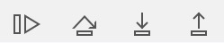
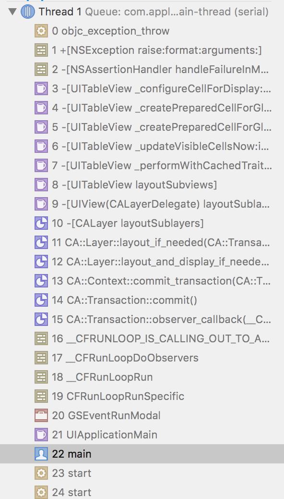

苦恼于理解你的代码而临时打印一个变量
objectivec
NSLog(@"%@", whatIsInsideThisThing);
或者跳过一个函数调用来简化程序的行为？
NSNumber *n = @7; // theFunctionThatShouldReallyBeCalled();if (1 || theBooleanAtStake) { ... }int calculateTheTrickyValue {
return 9;
/*
Figure this out later.
...
}而且每次都必须重新编译，然后经历漫长的等待？ 一般，我们debug的时候都要经过这么一个流程，修改 -> 编译 -> 重新运行 -> 祈祷。
LLDB是一个Xcode自带的一个开源调试器。存在于主窗口底部的控制台中。调试器允许你在程序运行的特定时暂停它，你可以查看变量的值，执行自定的指令，并且按照你所认为合适的步骤来操作程序的进展。（调试器是如何工作的)
你以前有可能已经使用过调试器，比如p、po等打印一些变量，但是其实还有更多的小技巧可以用来为我们服务。 GDB TO LLDB是一个非常好的调试器可用命令的总览。
<command> [<subcommand> [<subcommand>...]] <action> [-options [option-value]] [argument [argument...]]<command>(命令)和<subcommand>(子命令)：LLDB调试命令的名称。命令和子命令按层级结构来排列：一个命令对象为跟随其的子命令对象创建一个上下文，子命令又为其子命令创建一个上下文，依此类推。<action>：执行命令的操作<options>：命令选项<arguement>：命令的参数[]：表示命令是可选的，可以有也可以没有比如breakpoint set -n main
这个命令对应到上面的语法就是：
breakpoint 表示断点命令set 表示设置断点-n 表示根据方法name设置断点mian 表示方法名为mianLLDB支持不带命令选项(options)的原始(raw)命令，原始命令会将命令后面的所有东西当做参数(arguement)传递。不过很多原始命令也可以带命令选项，当你使用命令选项的时候，需要在命令选项后面加--区分命令选项和参数。
e.g: 常用的expression就是raw命令，一般情况下我们使用expression打印一个东西是这样的：
(lldb) expression tableView
(UITableView *) $2567 = 0x00007f813a00f200当我们想打印一个对象的时候，需要用到-O这个命令选项
(lldb) expression -O -- tableView
<UITableView: 0x7f813a00f200; frame = (0 0; 375 554); clipsToBounds = YES; gestureRecognizers = <NSArray: 0x7f8138ecea00>; layer = <CALayer: 0x7f8138ed1c70>; contentOffset: {0, 0}; contentSize: {375, 1005.5}>LLDB的命令遵循唯一匹配原则：假如根据前n个字母已经能唯一匹配到某个命令，则只写前n个字母等效于写下完整的命令。
(lldb) e tableView
(UITableView *) $2569 = 0x00007f813a00f200LLDB有了一个启动时加载的文件~/.lldbinit，每次启动都会加载。所以一些初始化的事儿，我们可以写入~/.lldbinit中，比如给命令定义别名等。但是由于这时候程序还没有真正运行，也有部分操作无法在里面玩，比如设置断点。
Syntax: help [<cmd-name>]help命令，可以列举出所有的命令。help p来打印该命令的用法。Syntax: expression <cmd-options> -- <expr>
<cmd-options>:命令选项，应为是raw命令，所以可选--:用于区分命令选项和参数，如果命令选项为默认，则可选<expr>:要执行的表达式expression是LLDB里面相当重要的一个命令，因为他主要实现了两个功能。
//改变颜色
(lldb) e tableView.backgroundColor = [UIColor redColor]
(UICachedDeviceRGBColor *) $2570 = 0x00007f8138fe4b20
//刷新界面
(lldb) e (void)[CATransaction flush]help p,我们发现p其实是expression --的别名。其实在实际中，我们直接用expression还是比较少的。更多的时候我们使用的都是系统为我们定义的几个方便的别名。'p' is an abbreviation for 'expression --'call: 调用某个方法
别名与对象的实际命令表
| 命令 | 别名 |
|-
| p | expression -- |
| print | expression -- |
| call | expression -- |
| po | expression -O -- |
thread backtrace [-c <count>] [-s <frame-index>] [-e <boolean>]
-c <count>:设置打印堆栈的帧数-s <frame-index>:设置从哪个帧开始打印-e <boolean>:是否显示额外的回溯
实际上我们一般很少用.....
e.g: 看一个实际的列子(lldb) bt
* thread #1: tid = 0x51b74, 0x0000000101cc05d6 GXQApp`-[GXQProductFolderTableViewController tableView:didSelectRowAtIndexPath:](self=0x00007f8138c48150, _cmd="tableView:didSelectRowAtIndexPath:", tableView=0x00007f813a00f200, indexPath=0xc000000000200316) + 86 at GXQProductFolderTableViewController.m:105, queue = 'com.apple.main-thread', stop reason = breakpoint 45.1
* frame #0: 0x0000000101cc05d6 GXQApp`-[GXQProductFolderTableViewController tableView:didSelectRowAtIndexPath:](self=0x00007f8138c48150, _cmd="tableView:didSelectRowAtIndexPath:", tableView=0x00007f813a00f200, indexPath=0xc000000000200316) + 86 at GXQProductFolderTableViewController.m:105
frame #1: 0x00000001060701c6 UIKit`-[UITableView _selectRowAtIndexPath:animated:scrollPosition:notifyDelegate:] + 1887
frame #2: 0x000000010607041b UIKit`-[UITableView _userSelectRowAtPendingSelectionIndexPath:] + 388
frame #3: 0x0000000105f34f62 UIKit`_runAfterCACommitDeferredBlocks + 317
frame #4: 0x0000000105f48e4c UIKit`_cleanUpAfterCAFlushAndRunDeferredBlocks + 95
frame #5: 0x0000000105f55147 UIKit`_afterCACommitHandler + 90
frame #6: 0x0000000108488c37 CoreFoundation`__CFRUNLOOP_IS_CALLING_OUT_TO_AN_OBSERVER_CALLBACK_FUNCTION__ + 23
frame #7: 0x0000000108488ba7 CoreFoundation`__CFRunLoopDoObservers + 391
frame #8: 0x000000010847e7fb CoreFoundation`__CFRunLoopRun + 1147
frame #9: 0x000000010847e0f8 CoreFoundation`CFRunLoopRunSpecific + 488
frame #10: 0x000000010a9dbad2 GraphicsServices`GSEventRunModal + 161
frame #11: 0x0000000105f28f09 UIKit`UIApplicationMain + 171
frame #12: 0x0000000101b6849d GXQApp`main(argc=1, argv=0x00007fff5e1a4568) + 205 at main.m:17
frame #13: 0x0000000109ec892d libdyld.dylib`start + 1
frame #14: 0x0000000109ec892d libdyld.dylib`start + 1thread return [<expr>]
thread return 可以接受一个表达式，调用命令之后，直接成当前frame返回表达式的值。 e.g:
int calculateTheTrickyValue {
return 9;
/*
Figure this out later.
...
*/
}
(lldb) thread return 9在打断点调试的时候，对于用触摸板的童鞋来说，可能去点这上面的这几个按钮一点也不方（装）便（逼）。
每一个按钮都有对应的lldb命令
- `c/continue/thread continue`：对于第一个按钮
- `n/next/thread step-over`: 第二个按钮
- `s/step/thread step-in`: 第三个按钮
- `finish/step-out`: 第四个按钮
(lldb) frame variable
(AppDelegate *) self = 0x00007fa5d3c0b8f0
(SEL) _cmd = "configXLFramework"
(GXQFramework *) framework = nil
(GXQFrameworkConfig *) config = nil想象一下，当在多个地方对某个对象的属性进行了修改，然后就懵逼了...靠!，哪里把这个值给改了!!! 这个时候watchpoint就派上了用场，他是一个对地址生效的断点，可以监控一个地址值得变化。
观察变量或者属性
1. Syntax: watchpoint set variable <cmd-options> <variable-name>,注意不接受方法，只接受变量名。
2. e.g:
(lldb) watchpoint set variable self->_productListManager
Watchpoint created: Watchpoint 16: addr = 0x7fa5d62139e0 size = 8 state = enabled type = w
watchpoint spec = 'self->_productListManager'
new value: 0x00007fa5d640d300用于观察某个地址
Syntax: watchpoint set expression <cmd-options> -- <expr>(lldb) p cell
(MarketListCommonWithCircleProgressTableViewCell *) $25 = 0x00007fa5d4074800
(lldb) watchpoint set expression 0x00007fa5d4074800
Watchpoint created: Watchpoint 8: addr = 0x7fa5d4074800 size = 8 state = enabled type = w
new value: 4374363368用于给断点添加命令
(lldb) watchpoint command add -o 'bt' 1(lldb) watchpoint command add 16
Enter your debugger command(s). Type 'DONE' to end.
> bt
> continue
> DONE对于target这个命令，我们用得最多的可能就是target modules lookup。由于LLDB给target modules取了个别名image，所以这个命令我们又可以写成image lookup。
image lookup –address
当我们有一个地址，想查找这个地址具体对应的文件位置，可以使用image lookup --address，简写为image lookup -a e.g: 当我们发生一个crash
#改版变量的值
expr param = 10;
#打印对象变量
po param
#打印普通变量
p param
#强制返回
thread return p<parameter>
#打印Subview结构
po [view recursiveDescription]brew update
brew install chisel
~/目录下找到.lldbinit文件，如果没有就创建一个新的并添加如下到文件底部。#~/.lldbinit
...
command script import /your/path/to/fblldb.py
#笔者的安装目录如下
#command script inport /usr/local/opt/chisel/libexec/fblldb.pySyntax: fv <classNameRegex>搜索当前屏幕Views中，名字匹配classNameRegex的view的地址
Syntax: pviews [--up] [--depth=depth] <aView>打印view的层级关系
--up 向上打印，直到Window--depth打印深度，1表示只打印第一层级，0表示打印所有层级。(lldb) pviews --u --depth=2 self.navigationController.view
<UITransitionView: 0x7feaf96124b0; frame = (0 0; 375 667); clipsToBounds = YES; autoresize = W+H; layer = <CALayer: 0x600000037d60>>
| <UIViewControllerWrapperView: 0x7feaf9407c40; frame = (0 0; 375 667); autoresize = W+H; layer = <CALayer: 0x60800023bb60>>
| | <UILayoutContainerView: 0x7feaf96143e0; frame = (0 0; 375 667); autoresize = W+H; gestureRecognizers = <NSArray: 0x600000052630>; layer = <CALayer: 0x600000037de0>Syntax: pvc <aViewController>打印ViewController的层级关系(lldb) pvc self.navigationController
<JFZCustomNavigationController: 0x7feafa836400; view = <UILayoutContainerView; 0x7feaf96143e0>; frame = (0, 0; 375, 667)>
| <CATViewController: 0x7feaf96128b0; view = <UITableView; 0x7feaf983c000>; frame = (0, 64; 375, 603)>
| <CATChildTableViewController: 0x7feaf970a500; view = <UITableView; 0x7feafb01a000>; frame = (0, 64; 375, 603)>
| <CATChildViewController: 0x7feaf963b710; view = <UIView; 0x7feaf9541520>; frame = (0, 0; 375, 667)>Syntax: visualize <target>用mac的图片预览工具直接打开UIImage, CGImageRef, UIView, or CALayer等
Syntax: pclass <object>打印object的继承关系
(lldb) pclass self
CATChildViewController
| UIViewController
| | UIResponder
| | | NSObjectSyntax: presponder <startResponder>打印一个特定Responder的相应链
(lldb) presponder button
<UIButton: 0x7feaf963a050; frame = (50 350; 300 44); opaque = NO; layer = <CALayer: 0x600000227140>>
| <UIView: 0x7feaf9541520; frame = (0 0; 375 667); autoresize = W+H; layer = <CALayer: 0x608000420280>>
| | <CATChildViewController: 0x7feaf963b710>Syntax: ptv打印屏幕中层级最高的UITableView
Syntax: pcells打印屏幕中可见的层级最高的UITableView的cells
Syntax: pinternals <object>打印object的所有内部成员变量
(lldb) pinternals self
(CATChildViewController) $248 = {
UIViewController = {
UIResponder = {
NSObject = {
isa = CATChildViewController
}
}
}
_topVC = nil
_button = 0x00007feaf963b160
}(lldb) e id $myView = (id)0x7f82b1d01fd0
(lldb) e (void)[$myView setBackgroundColor:[UIColor blueColor]]
(lldb) e (void)[CATransaction flush](lldb) e [self.navigationController pushViewController:[UIViewController new] animated:yes]
(lldb) caflush(lldb) po [$myButton allTargets]
{(
<MagicEventListener: 0x7fb58bd2e240>
)}
(lldb) po [$myButton actionsForTarget:(id)0x7fb58bd2e240 forControlEvent:0]
<__NSArrayM 0x7fb58bd2aa40>(
_handleTap:
)(lldb) e v=10Xcode崩溃日志分析工具symbolicatecrash用法
Finding iOS Memory Leaks with Xcode’s Instruments
How debuggers work: Part 1 - Basics
#ifdef replacement in swift language